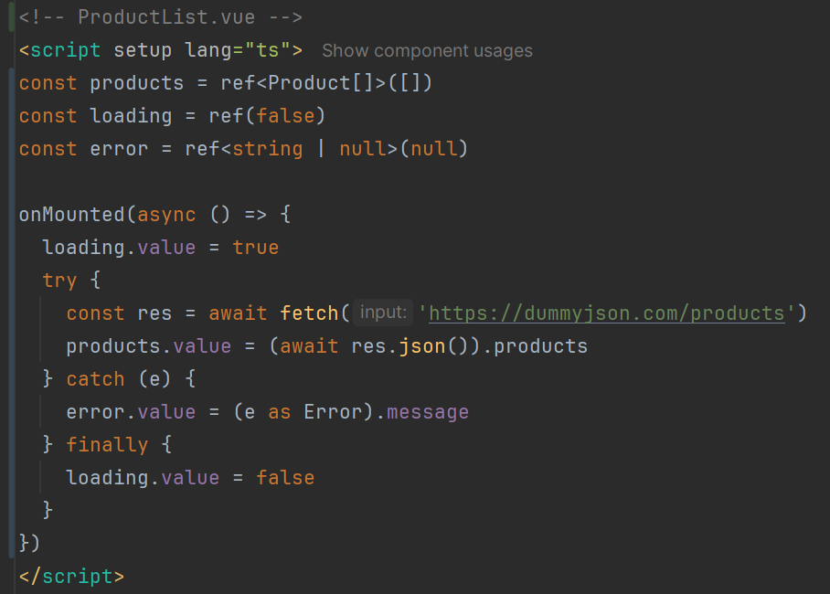
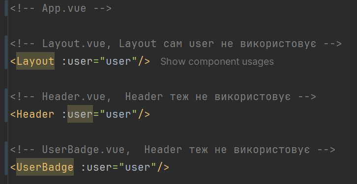
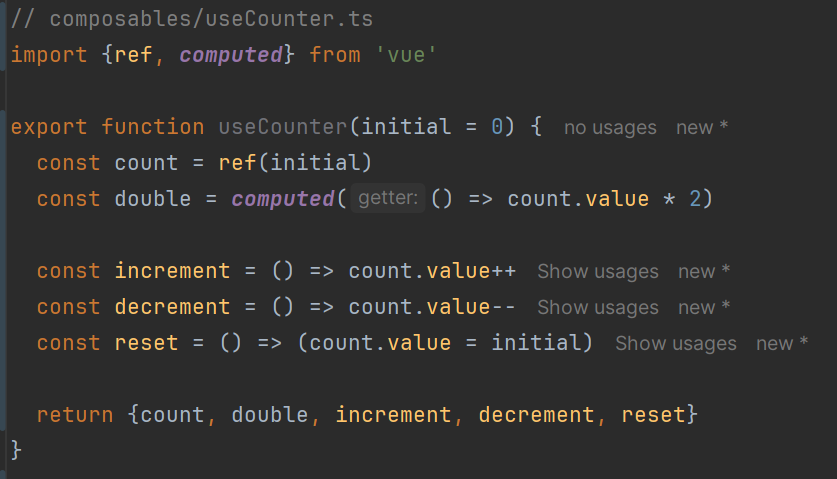
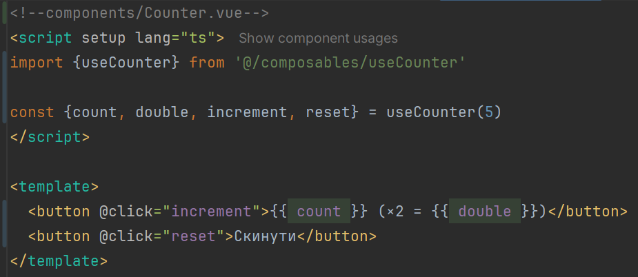
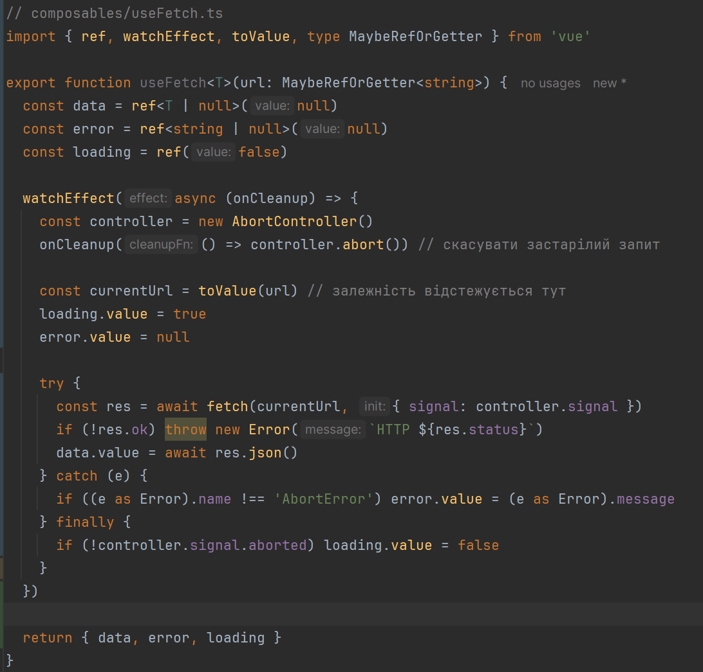
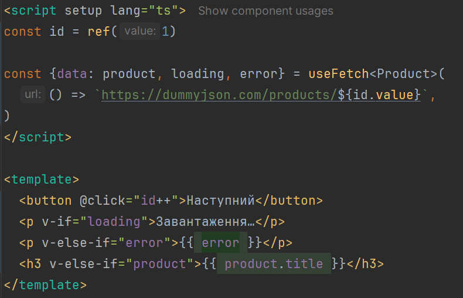
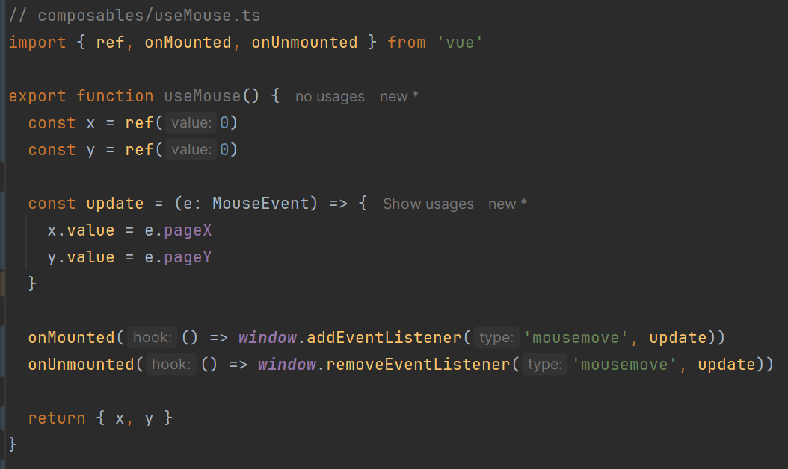
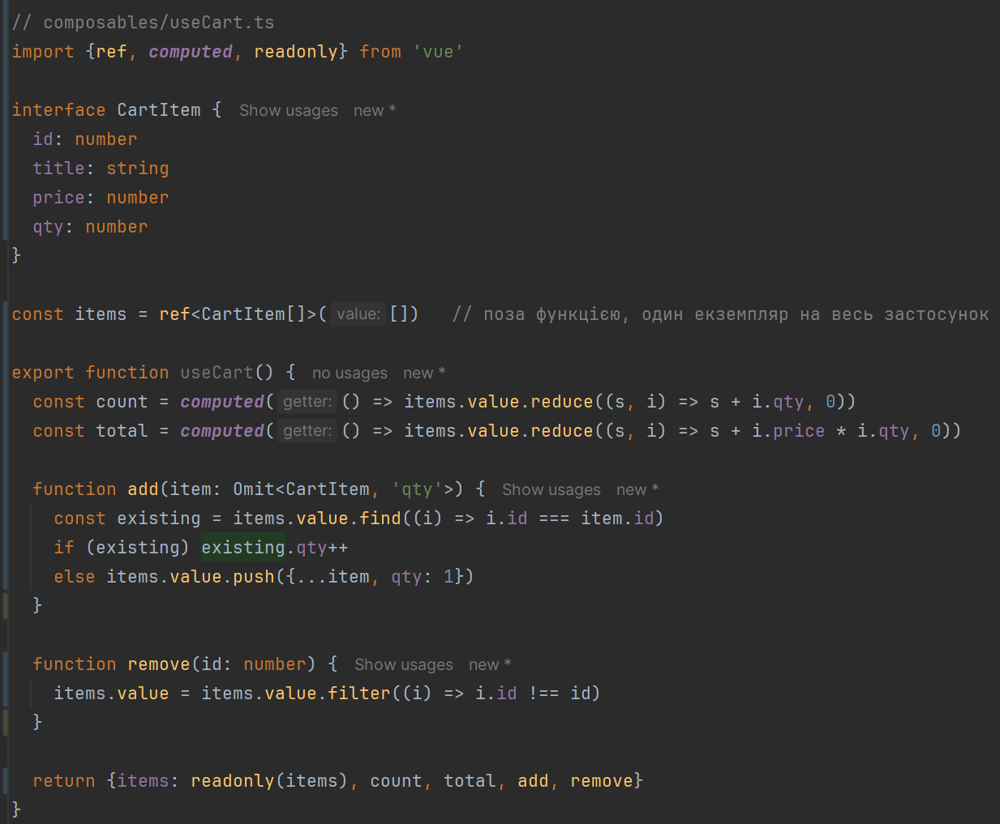
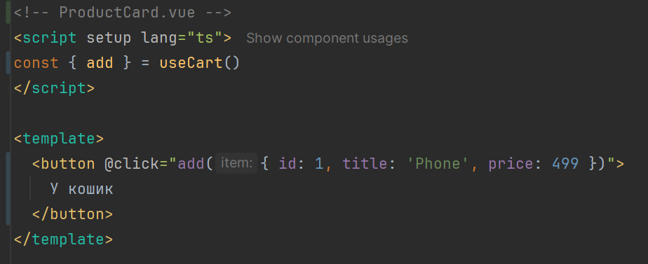
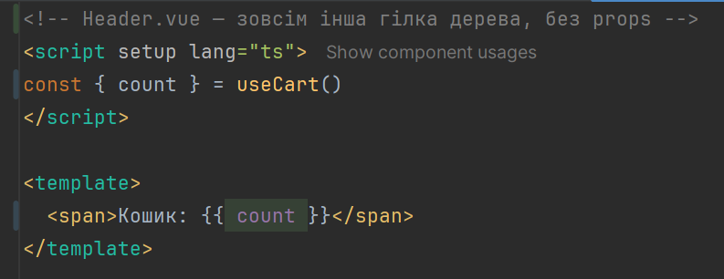

Лекція 8. Composables, повторне використання логіки зі станом, State manager Pinia
План лекції:
- Локальний стан компонента та проблема передачі даних (props drilling).
- Що таке composable і чим він відрізняється від утиліти та компонента.
- Composables: конвенції, префікс use, аргументи та значення, що повертаються.
- Composables: життєвий цикл і прибирання ресурсів.
- Спільний стан через composable та його обмеження.
- Для чого потрібен State Management.
- Підключення Pinia. Огляд Pinia.
- Приклад використання Pinia.
- Composable чи store: коли що використовувати.
Локальний стан компонента та його проблеми
У компоненті ми вже маємо ref, reactive, computed, watch — це локальний стан: він живе й помирає разом із
компонентом. Проблеми починаються, коли логіка потрібна в кількох місцях.
Дублювання логіки - копіювати блок «loading/error/data» у кожен компонент, який робить запит:

Той самий код з іншим URL з'явиться в UserList.vue, OrderList.vue тощо. Зміна поведінки означає правки в
кількох місцях.
Props drilling
Дані потрібні глибоко в дереві, а проміжні компоненти змушені їх «пропускати»:

Що з цим можна зробити:
- provide/inject — прибирає drilling, але залежність неявна й погано відстежується; (Provide/Inject
Docs)
- composable — виносить логіку (а за потреби й стан) у окрему функцію; (Composables)
- store — для глобального стану застосунку.
Composables
Composable — функція, яка використовує Composition API, щоб інкапсулювати й повторно використовувати логіку зі
станом (stateful logic).
Порівняємо з іншими способами повторного використання:
- утиліта — звичайна функція без реактивного стану (formatDate, clamp);
- компонент — логіка разом із шаблоном і стилями;
- composable — логіка зі станом без шаблону;
- mixins (Vue 2) — неявне джерело властивостей і конфлікти імен; composables їх замінили, бо все явно: що
викликаємо, що отримуємо.
Composables


Важливо кожен виклик useCounter() створює власний count. Два компоненти з цим composable мають два незалежні
лічильники.
Конвенції
- Назва - префікс use (useFetch, useMouse), файл composables/useX.ts.
- Повертаємо звичайний об'єкт із ref-ами, а не reactive: його можна деструктуризувати без втрати
реактивності.
- Аргументи - MaybeRefOrGetter: composable має приймати і значення, і ref, і геттер, а всередині розгортати їх
через toValue().
- Викликати синхронно в setup (або на верхньому рівні <script setup>) - життєвий цикл прив'язується до
поточного компонента.
- Не змінювати аргументи, які передав виклик.
- Повертати лише потрібне: внутрішні ref-и тримати прихованими або віддавати через readonly.
Composable useFetch з реактивним аргументом


Зверніть увагу на три речі:
- зміна id автоматично перезапускає запит, бо геттер читається всередині watchEffect;
- onCleanup + AbortController вирішують гонку запитів (відповідь на старий запит не затре новішу);
- залежності відстежуються лише до першого await, тому toValue(url) викликаємо до нього.
Життєвий цикл і прибирання ресурсів

- composable, що підписується на подію, таймер чи WebSocket, зобов'язаний прибрати підписку, інакше буде
витік пам'яті;
- звернення до window і document — лише в onMounted: на сервері (SSR/Nuxt) цей код не виконується;
Спільний стан через composable та його обмеження



Спільний стан через composable та його обмеження
Де це підхід ламається
- Немає інструментів налагодження: devtools не показують історію змін, немає time travel, незрозуміло, хто
змінив стан.
- SSR (Nuxt) - стан на рівні модуля живе в процесі сервера й спільний між запитами різних користувачів —
можливий витік чужих даних. Це головна причина, чому для глобального стану в Nuxt використовують useState
або Pinia.
- Тестування - стан зберігається між тестами, його доводиться скидати вручну.
- Немає стандартної структури, кожен розробник пише свій варіант; відсутні плагіни (наприклад, збереження в
localStorage), підтримка HMR.
- Масштабування - із зростанням кількості таких модулів зв'язки між ними стають складно відстежувати.
Для невеликого спільного стану в CSR-застосунку composable цілком працює, але для серйозного глобального стану
потрібне інструментальне рішення. Саме для цього існує State Management і Pinia.
Для чого потрібен State Management
Управління станом є невід’ємною частиною
створення складних вебдодатків, оскільки воно
дозволяє зберігати та керувати станом застосунку
та обмінюватися ним між різними
компонентами.
У Vue 3 можна використовувати вбудовані
API reactive і ref для керування станом на рівні
компонентів. Однак із збільшенням розміру і
складності застосунку централізоване та
узгоджене керування станом може стати
складним завданням, і саме тут у гру вступають
бібліотеки керування станом.
Для чого потрібен State Management
Спрощує зв’язок між компонентами: коли декільком
компонентам потрібен доступ до одних і тих самих даних
або стану, передача цих даних вгору та вниз по дереву
компонентів може швидко стати складною та важкою для
керування. Управління станом забезпечує
централізований спосіб для компонентів обмінюватися
даними, спрощуючи спілкування та полегшуючи
міркування щодо вашої програми.
Покращує продуктивність: зберігаючи стан у
централізованому розташуванні, бібліотеки керування
станом, такі як Vuex, можуть оптимізувати оновлення
стану та зменшити кількість повторних візуалізацій у
вашій програмі. Це може призвести до покращення
продуктивності та взаємодії з користувачем.
Для чого потрібен State Management
Забезпечує узгоджену обробку даних: за
допомогою керування станом ви можете
забезпечити узгоджену обробку даних у своїй
програмі. Визначивши, як дані мають
оновлюватися та отримувати доступ в одному
місці, ви можете уникнути непослідовної обробки
даних і зменшити ймовірність помилок.
Полегшує налагодження та тестування:
бібліотеки керування станом, такі як Vuex, часто
постачаються з інструментами та плагінами, які
полегшують налагодження та тестування вашої
програми. За допомогою централізованого
керування станом ви можете легше відстежувати
помилки та перевіряти поведінку програми.
Для чого потрібен State Management
Добре масштабується з великими програмами:
у міру того, як ваша програма росте, ефективніше
керувати станом стає важче. Бібліотеки керування
станом, такі як Vuex, забезпечують масштабований
спосіб керування станом, оскільки ваша програма
стає більшою та складнішою, що полегшує її
підтримку та розширення з часом.
Підключення Pinia. Огляд Pinia.
Припустімо, ми створюємо вебсайт
електронної комерції за допомогою Vue 3 і
нам потрібно керувати станом кошика для
покупок користувача. Ми хочемо мати
можливість додавати й видаляти товари з
кошика, оновлювати кількість і обчислювати
загальну вартість товарів у кошику.
Щоб керувати цим станом, ми
використовуватимемо бібліотеку керування
станом - Pinia (Pinia The intuitive store for
Vue.js), Getting Started.
Composable чи store, що обрати?
- Чи потрібен цей стан лише одному компоненту? → локальний ref.
- Чи це повторювана логіка, де кожне використання має мати свій стан (useFetch, useDebounce, useMouse)? →
composable.
- Чи це глобальний стан застосунку (користувач, кошик, налаштування), який потрібен у віддалених компонентах і
має пережити розмонтування? → store.
- Чи потрібні SSR-безпека, devtools, плагіни? → store.